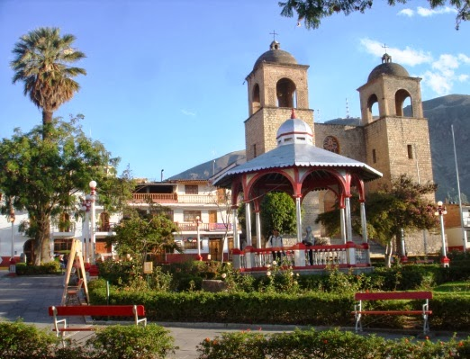

Caraz
La Ciudad de Caraz es una más de las bellas ciudades que el hermoso departamento de Ancash tiene para ofrecer a sus visitantes. Aquella es una de las últimas ciudades que se encuentran en el circuito del Callejón de Huaylas y es valiosa por ser la capital de la provincia de Huaylas.
Caraz se ve rodeada de hermosas cadenas montañosas, de hecho, en sus alrededores, es posible acceder a la ruta de Trekking de Santa Cruz, la más famosa del lugar, a través de la Cordillera Blanca, y que toma un promedio de 4 o 5 días de recorrido.
Así como la anterior ruta de trekking, en Caraz existen otros lugares atractivos, sobre todo para los interesados en los deportes de aventura, que no se pueden perder; tal es el caso del Cañón del Pato, a través del cual, algunas compañías locales, programan circuitos turísticos en bicicleta o donde se puede practicar el ciclismo de montaña. Un atractivo más de la dulcera ciudad de Caraz es la Laguna Parón, la de mayor dimensión en la zona y que se ve rodeada de un hermoso escenario natural.
Para quienes tengan interés en el turismo arqueológico, la ciudad de Caraz también tiene para ofrecer a sus visitantes un sitio prehispánico conocido como Tumshucaico, donde se observan construcciones que evidenciarían que aquel lugar habría servido como un Centro Ceremonial en su época de apogeo.
El agradable clima de la ciudad, que por lo general es cálido y templado, invita al turista a conocerla y disfrutar de la calidez de su gente, durante cualquier época del año. Caraz espera a sus visitantes también para que aquellos puedan disfrutar de la increíble gastronomía dulcera que la caracteriza, y donde el visitante no puede dejar de probar exquisiteces como su manjar blanco, diferentes pasteles y los infaltables conos de helado. |